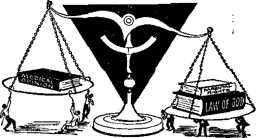

Why So Many Disasters?
Australian Court Tests Parental Rights
Calypso—Folk Music of Trinidad
The Rising Tide of Alcohol
THE MISSION OF THIS JOURNAL
New sources that are able to keep you awake to the vital issues of our times must be unfettered by censorship and selfish interests. ‘'Awake!" has no fetters. It recognizes forts, face facts, is free to publish facts. It is not bound by political ambitions or obligations; it is unhampered by advertisers whose taes must not be trodden on; it is unprejudiced by traditional creeds. This journal keeps itself free that it may speak freely to you. But it does not abuse its freedom. It maintains integrity to truth.
"Awake!" uses the regular news channels, but is not dependent on them. Its own correspondents are on all continents, in scores of nations. From the four corners of the earth their uncensored, on-the-scenes reports come to you through these columns. This Journal's viewpoint is not narrow, but is international, ft is read in many nations, in many languages, by persons of all ages. Through its pages many fields of knowledge pass in review—government, commerce, religion, history, geography, science, social conditions, natural wonders—why, its coverage is as broad as the earth and as high as the heavens.
"Awake!" pledges itself to righteous principles, to exposing hidden foes and subtle dangers, to championing freedom for all, to comforting mourners and strengthening those disheartened by the failures of a delinquent world, reflecting sure hope for the establishment of a righteous New World.
Get acquainted with "Awake!" Keep awake by reading "Awake!"
PUBLISHED Simultaneously for the United States and for the WATCHTOWER BIBLE AND TRACT SOCIETY OF NEW YORK, INC. lit Adams Street Brooklyn 1, New York, U.S.A..
and in England by WATCH TOWER BIBLE AND TRACT SOCIETY
Watch Tower House, The Ridgeway N. H. Knorr, President
PrinttnO this issue: 3,500,000
“Awake.1” h ftWUM *> Mhrliff 21 IsMufM: Samoan—Afrikaans. Swahili. Urdu, Ethiopian, Hungarian. French. German, Greek:. Italian. Japanese. Norwegian, Polish, Spanish, Swedish Tagalog, Tamil.
Monthly—Albanian. Luganda, Korean, Polish Ukrainian-Latin,
Yearly injhMTlptltni rates
Dues fcr semi-monthly collection
Mo, U.S.A. 117 Adams St, Brooklyn 1, K.l. li H Rd, N.fi.W. 8/-
Canada, 150 Meadow Toronto 19, Ont. tl England, watch Tower House,
The Ridgeway. London x W, 7 7/-
New Zaaland, 821 New North Rd., Auckland, 8.W. 1 7/-Subscription rates subject to change without notice TtL 7/-
Foreign editions and all of the above
London W.W’. 7, England Grant Sturts 3ecret*n/
4d a. copy (Australia, Remittances for subscriptions should be sent Id the office Jp your country. Otherwise semi four remittances to Brooklyn, New York City's office wl at Jeaji iw •bilOTe atiwcrttiftoo expiree.
CHANGES OF ADDRESS should roach » thirty rfayi Mm before the date. Remittance must be sent «U sent
address (If possibly, to and our change address Watch Tower House, The Ridgeway, London N.W. 7. England.
Entered second-class matter at Brooklyn, N.Y.
Th* B^te VaiflUtiMi In th# Hew Wurttf d tbt BttlptKfe.
When other translation) are used the following symbols will appear-bahl^d the citations:
AV An American Translation AV- AJitkcwiaed. Version (11511) £>a - 7. *v, Owty-'ffirento*
Dy - Catholic Douay, ED- The KinphatU DlagloU. JP - Jewish Publication Society. Lamsa - Issac beeser'ff Terai on
Mo -
Rhm - J. N. Darby ij vtadon totacl BtuuJivri Version
RV — Robert Foothill e
CONTENTS
Australian Court Tests Parental Rights 9
Calypso—Folk Music of Trinidad
"The Secularism of a Religious People” 25
"Your Word Is Truth”
against
E ALL appreciate words of commendation. When we
have tried hard we like to feel that our efforts and our works have achieved
the desired results, and it
reassures us to hear others say so. Words of genuine praise, therefore, do good, encourage and build up love and friendship. Not so, however, with the words of flattery.
Flattery is defined as “false, smooth or excessive praise.” The word itself comes from a root meaning to smooth out or flatten by stroking. A flatterer knows how to stroke your fur the right way, as it were. At least until the present century, the most adept flatterers were the nomad tribes of Arabia, for, according to Spencer, in his Principles of Sociology, “the salutation of Arabs are such that , . . compliments in a well-bred man never last less than ten minutes.”
Not that flattery is limited to a profusion of verbal compliments. Flattery may take the form of giving gifts or consist of smiles and laughter. Many are the gestures and facial expressions that can flatter. And in particular is it flattery when we use fine words but do not follow them up with consistent action. Such were the hypocritical religionists of Ezekiel’s day, one of Jehovah’s prophets of the seventh century B.C. God said to him: “Son of man, ... they sit before you as my people, and they hear what you say but they will not do it; for with their lips they show much love, but their heart is set on their gain.”—Ezek. 33:30,31, RS.
Of course, when it comes to the Creator, Jehovah God, there is no such thing as excessive praise. However, much praise directed to him might be said to be flattery in that it is insincere. Of those who offered such praise the prophet Isaiah wrote: “This people have come near with their mouth, and they have glorified me merely with their lips, and they have removed their heart itself far away from me.”—Isa. 29:13.
As for creatures, when sincere praise is given to a mature person he will feel neither embarrassed nor puffed up but will accept such praise modestly and graciously: “Thank you. I’m glad you enjoyed the meal (the discourse). I enjoyed preparing (delivering) it myself.” All such makes for happiness and therefore can be upbuilding.—1 Thess. 5:12,13.
But flattery is something entirely different. It is insincere. If we are honest with ourselves we usually can detect it both by the tone of voice used and by its overstatements. However, we must be alert because, due to inherited imperfections, we are prone ‘to think more highly of ourselves than we ought to think,’ making ourselves susceptible to flattery. That is why we are warned: “A flattering mouth causes an overthrow.” “An able-bodied man that is flattering his companion is spreading out a mere net for his steps.” —Rom. 12:3; Prov. 26:28; 29:5.
In fact, it might be said that all this world’s woes started because of a failure to guard against flattery. Were not insincere and excessive compliments implicit in the Adversary’s holding out to Eve the flattering prospect of becoming like God himself? By appealing to her vanity with counterfeit words, he ensnared her. Satan used the same approach in one of his temptations of Jesus: ‘Throw yourself down from the pinnacle of the temple. Amaze everyone by landing unhurt and proving to all you are indeed the Son of God!’ But that flattery proved futile, for the Son of God knew his Father’s Word and was without vanity.—Gen. 3:5; Matt. 4:5-7.
Today Satan has many who flatter him by imitating his flattering methods. Beware of the salesman who appeals to your vanity, using the argument of status instead of telling you of the merits of the product he is trying to sell you. Be on guard against the person who seeks your friendship by flattering you. No doubt most unwed mothers were first seduced by the clever flattery of an unprincipled male.
Not only should we be on guard against the flattery of others, but we must also be careful that we ourselves do not indulge in flattery, of ourselves or of others. Thinking too highly of ourselves is a form of flattery that can ensnare us. Overconfidence and over-optimism can cause us to flatter ourselves as to the wisdom of a certain course. Said a wise king: “Happy is the man that is feeling dread constantly.”—-Prov. 28:14.
As for flattering others, which can harm not only those we flatter but also ourselves, we do well to follow the examples of Elihu, of Job’s time, and of the apostle Paul. Said Elihu to Job: “Let me not, please, show partiality to a man; and on an earthling I shall not bestow a title, for I certainly do not know how I can bestow a title. Easily my Maker would carry me away.” (Job 32:21, 22) And Paul wrote: “Am I seeking to please men? If I were yet pleasing men, I would not be Christ’s slave.” “In fact, at no time have we turned up either with flattering speech, (just as you know) or with a false front for covetousness.”—Gal. 1:10; 1 Thess. 2:5.
Those living in totalitarian lands have added reason for guarding against flattery. How so? Because the law of the land demands flattery. Dictators are like Haman, who demanded that all bow down to him. They are also like Satan when he tried to bribe Jesus to flatter him by doing an act of worship before him.—Esther 3:1-5; Matt. 4:8-10.
Christian ministers are often given undue praise by well-meaning but ill-advised persons of good will. At such times they must remember that ‘they have nothing that they did not receive,’ as well as the example set by Jesus. When the rich young ruler addressed him, “Good Teacher,” Jesus objected; “Nobody is good, except one, God.”—1 Cor. 4:7; Mark 10:17, 18.
The best safeguard against all flattery is humility. If we are humble we will not be ensnared by the flattery of others, and we will not ensnare others or our own selves by flattery. Since flattery is such a snare, GUARD AGAINST FLATTERY!
Is God Responsible? Will the World Survive?
STINGING torrents of rain driven by 135-mile-an-hour winds lashed Japan in September, 1959, in the worst typhoon of its history. The storm whipped up the sea into mighty waves that crashed through sturdy dikes, sweeping away whole villages—people, livestock and all. Nearly 1,500,000 persons were left homeless and over 4,000 lost their lives in this frightful disaster.
What hit Japan was one of many disasters that struck in various parts of the earth during 1959. One flood in India affected 2,000,000 persons, destroying 500,000 homes, and two more floods there left another 900,000 homeless. China suffered from the worst floods in its
history, with 2,000,000 made homeless and 187 killed. A typhoon that hit Korea brought to that country the worst natural disaster in fifty years. Floods in Taiwan brought death to 649 and destroyed the homes of more than 240,000 persons, and in Mexico a flood, a hurricane and an earthquake took a heavy toll in lives. Throughout the world during 1959 disasters caused by floods, storms and earthquakes claimed over 11,000 lives and made more than 7,000,000 persons homeless.
Disasters continued to hit hard in the early months of 1960, setting a frightening pace. Floods wreaked havoc in Peru, Brazil, the Netherlands, Greece and Ceylon; a typhoon hammered Mauritius, leaving 1,700 casualties; and earthquakes struck in Chile, Peru, Hawaii, Algeria and Morocco, doing much damage. The one in Morocco violently shook the city of Agadir during the night of
February 29, bringing buildings crashing down upon the surprised inhabitants. It snuffed out the lives of more than 10,000 persons.
Some religious persons may claim that God is responsible for disasters such as these. Before the Morocco earthquake there were some devout Moslems that apparently had this view, because it is reported that they had said: “This is Hamadan and God won’t strike us while we are paying homage.” Since disaster did strike, should it be concluded that God did it? To blame him would be a gross injustice. This was not an “act of God,” as legal authorities often call destructive happenings that are beyond human control. That . he was not responsible for this and other recent disas-ters is evident from the fact that good persons as well as bad died in them.
Because God used natural forces in ancient times to execute his judgment upon
wicked people, that does not mean that every disaster is caused by him. In Noah’s day warning was given well in advance of the cataclysmic flood that destroyed the world of that time. When it came, there was no doubt in anyone’s mind that God brought it upon the world as he had forewarned. Later when he fought for the nation of Israel, he used natural forces on several occasions to destroy the enemies of his people, but here again he let it be known that he caused those disasters. When he split the ground in the days of Moses, causing it to swallow Dathan and Abiram, along with their families, he was clearly identified as the one who did it. But such identification with God cannot be made of disasters today. He has given no advance warning that he is using a certain earthquake or storm for his purposes, but they strike indiscriminately.
Why Permitted
As Creator of the earth it is within the power of Jehovah.'God to control the natural elements of earth at will. Regarding this it is written: “He causes the tempest to stand at a calm, so that the waves of the sea keep quiet.” “You are ruling over the swelling of the sea; when it raises up its waves you yourself calm them. Heaven is yours, the earth also is yours; the productive land and what fills it—you yourself have founded them.” (Ps. 107:29/89: 9, 11) This raises the obvious question, Why does God permit hurricanes, typhoons, floods and earthquakes to destroy property and life as well as bring great suffering to thousands upon thousands of people when he can stop them? The answer is found in the fact that man is not under God’s government.
When man was created Jehovah God placed him in a paradise, a protected garden. It was his purpose that man should multiply and fill the earth, and in so doing the garden of Eden would, necessarily, be expanded. Eventually it would encompass the entire earth. The first human pair rejected the sovereignty of God by willfully disobeying him. For this they were expelled from the protected garden God had prepared for them. They lost for themselves and for their descendants the special favor and blessing of their Creator that they had enjoyed in the garden of Eden. “Through one man sin entered into the world and death through sin, and thus death spread to all men because they had all sinned.”—Rom. 5:12.
After man’s fall into sin, God allowed the human race in general to live day by day according to “time and unforeseen occurrence.” What happened to them from day to day was by chance and not by God’s direction. "I returned to see under the sun that the swift do not have the race, nor the mighty ones the battle, nor do the wise also have the food, nor do the understanding ones also have the riches, nor do even those having knowledge have the favor; because time and unforeseen occurrence befall them all.” (Eccl. 9:11) God allowed humans to multiply and to live out their lives without interference from him, except in special instances involving his servants. That is why storms, earthquakes, floods, fires and accidents injure and kill the good and bad alike.
Because man rejected God’s sovereignty in the beginning by refusing to obey him, Jehovah has allowed the human race in general to be on its own as far as government is concerned. With the exception of the nation of Israel, God has ruled no nation, but has permitted the spirit creature whom man heeded in the beginning to be the invisible ruler over man. That one is Satan the Devil, who is identified in the Bible as the ruler of this world. “Now there is a judging of this world; now the ruler of this world will be cast out.” (John 12:31) He is also the god of the world. “The god of this system of things has blinded the minds of the unbelievers, that the illumination of the glorious good news about the Christ, who is the image of God, might not shine through.” (2 Cor. 4:4) Until Jehovah God’s appointed time to vindicate his good name and position as Supreme Sovereign by destroying Satan’s wicked system of things and rebellious humans, disasters will continue taking their toll indiscriminately. God will not interfere.
A Significant Time
This is a very significant time in which we are now living because Satan’s invisible rule of earth is drawing to a close. “Woe for the earth and for the sea, because the Devil has come down to you, having great anger, knowing he has a short period of time.” (Rev. 12:12) There are ample indications proving these to be the last days of the present wicked system of things. The time is at hand for God to exert his great power in human affairs by bringing this system of things to an end.
When speaking of these last days, Jesus indicated that they would be a time of great trouble for mankind. Among other things he said there would “be great earthquakes and in one place after another pestilences and food shortages, and there will be fearful sights.”—Luke 21:11.
What he and other Bible prophets foretold has come upon this generation since 1914, marking this period as the time of which they spoke. Since that date there has been an unusually large number of major earthquakes that have brought incalculable woe upon large masses of people. Add to this the distress caused by a great number of raging storms, destructive floods, devastating fires, appalling accidents, globe-circling wars, mushrooming crime waves and upheavals in the sea of mankind—we have a period of woe such as man never before experienced. Obviously, this is the time marked by prophecy as the last days. “On the earth anguish of nations, not knowing the way out because of the roaring of the sea and its agitation, while men become faint out of fear and expectation of the things coming upon the inhabited earth.”—Luke 21:25, 26.
Immediately before us is an unparalleled world disaster that will be brought on by God. Through his written Word he forewarns us of it. Unlike other disasters that strike down both good and bad, it will destroy only those whom God has judged adversely. “For those being blessed by him will themselves possess the earth, but those upon whom evil is called by him will be cut off.” (Ps. 37:22) It will be the end to the present wicked system of things.
During the thousand years following this great event, the King of God’s kingdom, Jesus Christ, will bring drastic changes to the face of the earth and to human affairs. He will transform the earth into the paradise God purposed in the beginning. Mankind will submit to the sovereignty of God by means of the Kingdom and will enjoy the blessings and security promised in the Scriptures. Never again will humans suffer from disastrous earthquakes, storms, floods and fires. Never again will homes and loved ones be swept away in raging floodwaters or be smashed by an earth-shaking quake. Never again will roaring flames consume a home and everyone in it.
Instead of our existence’ being threatened from day to flay by unforeseen disasters, we will be able to face each new day and each new year with full confidence that we will live through it, for God “himself promised us, the life everlasting.” (1 John 2:25) This marvelous future gives us hope while living among the great troubles that mark the last days.
•$> In the “Medicine” column of Cana- / da’s Saturday Night magazine of Novem- L. ber 7, 1959, Brian Cahill -writes under the |jS title given above: "The transfusion of 9| blood from one human being to another Es is such a common procedure today that scarcely anyone questions its usefulness MH or Its safety. When objection is raised, argument centers about such issues as civ-11 rights, parental responsibility and reli- g gious freedom; it being assumed by most parties to the dispute that the blood transfusion, in itself, is a good or, at least harmless, procedure. This is too easy an assumption. A blood transfusion can kill a man almost instantly on the operating table when he develops a severe allergic reaction to another’s blood. Or it causes him to come down, sometimes within hours, sometimes not for months, with hepatitis—a virus infection that results often in severe illness and sometimes in death. And, perhaps the most tragic danger of all lurks in the fact that a blood transfusion given to a girl or a woman today may, many years later, kill her unborn child or her newborn infant because of the mysterious Rh factor existing, undetected, in the donor's blood."
POTENTIAL DEADLY DANGERS
The Pittsburgh Press ai November 22, 1959, in the column “Medicine Chest," tells of a report by Dr. Elmer L. DeGowin of the State University of Iowa that appeared in the then current issue of the journal Medical Science; "Even ‘under the best conditions,’ Dr. DeGowin reports, a transfusion proves fatal about once in every 1000 cases. And non-fatal reactions are much more common, occurring perhaps as frequently as once in every 20 cases. According to Dr. DeGowin, ‘the most common cause of death from blood transfusion’ seems to be ‘circulatory overload.’ That is, giving the patient more blood than his heart can handle. Also, it’s ‘very difficult to predict’ who’s apt to run into this kind of trouble unless the patient has had heart failure before.”
cancer through transfusions
Said the British magazine Fitness, in its November-January, 1960, issue: "When patients receive blood transfusions from donors, presumed to be ‘healthy,' who are in a precancer-\ ous state, it can, according to Prof. Clara .J Fonth of Milan, as she reported many
cases at the 6th International Congress of gHg prophylactic Medicine in Holland, 1957, HH cause the start of cancer in these unfortunate patients who received blood plasma HB of such ‘healthy donors.’ ” Thus death is H0 brought about indirectly by the means
that was meant to avoid it. The article K continues; “It looks to the author that the i Jehovah’s Witnesses are not so ignorant when they refuse blood transfusions.”
“MOST DANGEROUS DRUG”
"j? “One Milwaukee hematologist,’’ reports the Milwaukee Journal of February 20, 1960, “tells medical students that blood is the most dangerous drug a doctor can give—potentially.”
LETHAL DANGERS
"S’ The March, 1956, issue of Postgraduate Medicine has an article by Tibor J. Green wait, Assistant Clinical Professor of Medicine, Marquette University School of Medicine, Milwaukee, Wisconsin, that says: "The use of blood seems to increase in proportion to its availability. A request for a blood transfusion requires no more effort than an order for aspirin. . . . This simplification has led to a frightening disregard of the potential lethal dangers which lurk in every bottle of blood. . . , The mortality associated with transfusions has been estimated to be from 1 in 1000 to 1 in 3000. The approximately 5,000,000 pints transfused annually in the United States are probably at least contributing factors in 1700 deaths.”
OBSERVATION
An article in the Massachusetts Physician of January, 1960, quotes a medical doctor as saying: “I heard a speaker at a College of Surgeons meeting make the observation that there are more deaths from, transfusions nowadays than there are from acute appendicitis.”
SAFETY FIRST
Dr. Walter C. Alvarez, Emeritus Consultant, Mayo Clinic, has said: “Because of the great danger in transfusions, I myself, would not have one if I could possibly get out of it.” —Oregon Journal, November 4, 1957.
AUSTRALIAN
COURT
TESTS
ON THE third of January, 1959, in the Queen Victoria Hospital, Melbourne, Australia, a child was born to Mrs. Alvin Jehu, the death of which subsequently started one of the most unusual court cases of mod
PARENTAL RIGHTS
Later Mrs. Jehu was also baptized, four months before Stephen’s birth.
Transfusion
Issue
During the previous two years the right of Jehovah’s
em times. The baby, Stephen Jehu, was born at 3:38 p.m. Just a little over forty-five hours later it died. Its father, Alvin Leonard Jehu, age 29, was charged with manslaughter. Why? The answer to this question and the ensuing trial compose a story of human drama and conflicting medical and religious convictions that are absorbing to follow.
Alvin and Betty Jehu are Christian ministers living in the suburb of Reservoir, city of Melbourne. They have four children. In 1951 their first child was born, healthy and without disease. Following its birth Mrs. Jehu had the only blood transfusion in her life. The next two children were ■jaundiced shortly after birth. Was the jaundice the result of the blood transfusion?
Early in 1956 Alvin Jehu began a sincere study of the Bible. As he conscientiously took in accurate knowledge of the Creator’s will and purpose his life became transformed. His actions and conduct changed. His concern for his family increased, he became a more devoted husband and father and took a great interest in spiritual matters. On November 10,1956, he was baptized and ordained as a minister. witnesses to refuse a blood transfusion for their children had been coming to the fore. Upstate at Bendigo, tremendous publicity was given to parents who refused a blood transfusion for their child, but the child defied the opinion of doctors and lived. A few months later a similar case arose, but this time the baby died. Does not the Children’s Welfare Act state that a parent who without reasonable excuse neglects to provide medical aid for his child is guilty of an offense?
On January 3, 1959, baby Stephen Jehu was born. The nurse who supervised the birth said it was a normal birth and described the baby as big and healthy. But taler, at 1 a.m. Snrulay, January 4, Dr. McAuliffe found it to be jaundiced, with an enlarged spleen. He concluded that there was incompatibility between the blood of mother and child and made tests confirming this. At that time he did not conclude that there was any immediate danger to its life.
At 3 o’clock that afternoon Dr. Nasser explained to the parents that, while he did not think the baby would die, it would be wise to sive it an exchange blood transfusion in order to protect it from possible
brain damage and from being' spastic.
The parents suggested that the hospital use other forms of treatment, having in mind the laws of God concerning the use of blood. The baby was in no immediate danger of death and two previous children of theirs born jaundiced had recovered.
By 7 o’clock that evening the jaundice had increased and the spleen was larger, but the baby was still feeding and behaving relatively normally. At 1:45 a.m. January 5 an examination found it refusing to eat, listless and lethargic. By 3 a.m. the baby was irritable, showing signs of kemicterus, brain damage due to jaundice. At 9:45 a.m. the honorary pediatrician to the hospital, Dr. Elizabeth Turner, examined the baby. She told the parents that, in her mind, it was dying from the effects of severe jaundice, but could possibly be saved if the parents would allow an exchange transfusion. Mr. Jehu refused, signing a statement to that effect. About an hour and a half later the baby died. As a result Mr. Jehu was charged with manslaughter on the grounds that he had neglected to provide proper medical aid for his child.
Issues at Stake
The vital issue from a Christian viewpoint was not whether a parent had the right to refuse a blood transfusion for his child when doctors say it needs one, but can a Christian willfully violate the laws of God because a life is at stake? Can parents be punished for fulfilling parental obligations when these obligations are laid down, not by a panel of medical experts, but by the Almighty God himself?
In a country where it is claimed that the cornerstone of life is religious faith and freedom of worship, can a man actually take his stand on this cornerstone without being punished? Do doctors have more authority over children than parents? What the entire matter centered around was this: Whose opinions are supreme, those of medical science or those of the God who created all life and who can take it away forever but also restore it to those who obey his laws ?
The Trial
The case began in the Court of General Sessions, Melbourne, March 23, 1960. Its being the first of its kind in the world, many eyes were focused on the trial, presided over by Judge Nelson.
During the five days of trial the Crown called fifteen witnesses, including the government’s senior pathologist, a professor of obstetrics and gynecology of the Melbourne University, and the senior serologist of the .Red Cross Blood Bank Transfusion Service in Victoria. The crux of their testimony was to identify the incompatibility in the blood of the child and prove that the diagnosis of the disease was correct, that the proper form of treatment was an exchange blood transfusion, and that the baby would have lived had the transfusion been given.
Under cross-examination these medical witnesses had to answer these questions: What was the reason for the incompatibility in the baby’s blood? How could it be proved that the child would have survived an exchange transfusion? Why was it that they had said the baby was normal and yet it was found to be strongly jaundiced and had an enlarged spleen only twelve hours after birth? Was it not true that the child was much sicker than the hospital authorities were willing to admit, in view of the fact that it so rapidly deteriorated after midnight Sunday? How could they explain the testimony of the government pathologist that his post-mortem examination revealed that the baby had a partially collapsed lung and a patent duct in its heart? Were these not sufficient alone to cause death? How could the doctors prove that blood transfusion itself would
not kill the child as it has done in previous cases?
Defense Presented
When Alvin Jehu was asked to give his reasons for refusing the transfusion he stated: “My first reason was because of my conscientious belief that it was a direct violation of the Almighty God’s laws.” As a Christian father Mr. Jehu had the greatest love for this child and would have done everything possible to preserve its life. He explained, however, that life in God’s new world was far more important to the child and that willful disobedience of God’s law concerning blood transfusion would lead to eternal death for himself and the child, which would be judged by God through the father’s disobedience. He had firmly fixed in mind the words of Jesus at Matthew 16: 25: “For whoever wants to save his soul [life] will lose it; but whoever loses his soul tor my sake will find it."
God, through his holy spirit, had already declared what Christians should do in this matter, at Acts 15:29: ‘Abstain from blood.’ This repeats the command given to the Israelites at Leviticus 17:10; “As for any man of the house of Israel or some temporary resident who is residing for a while in your midst who eats any sort of blood [so taking it into the body to sustain life], I shall certainly set my face against the soul that is eating the blood and I shall indeed cut him off from among his people.” The matter was out of Jehu’s hands. He did not write the Bible. He appreciated that it was written by the spirit of God and that obedience would lead to eternal life for him and his children. By his faithfulness to God he could receive his child back in the resurrection. So, far from neglecting the child, his course of action showed his intense devotion to the most important interests of the child, its everlasting life.
Counsel for the defendant pointed out that the baby was by no means healthy. The Jehus were ready to accept any other treatment apart from a blood transfusion, which God forbade. The defendant put the Word of God first in his life and he could not and would not by any means prove himself a traitor to God. Furthermore, the parents had already had the experience of two jaundiced children who had recovered and they hoped this one would also. There was no conclusive evidence that the blood transfusion would have saved its life. The evidence indicated that at the time of the father’s refusal the baby was too sick to have withstood the rigors of a blood transfusion. The defendant’s decision was not gross, culpable and reckless, as the Crown attorney had contended.
The Verdiet
For three hours and twenty minutes the judge summed'up and gave his directions to the jury. Displaying a clear and thorough understanding of all the details, the judge highlighted the argument first for the Crown and then for the defendant. If there was any reasonable doubt as to the baby’s surviving the blood transfusion if given it; if there were no indications of culpability and recklessness in the father’s decision to refuse the transfusion; if there was doubt as to the nature of the disease and method of treatment prescribed, then, the jury must bring in a verdict of not guilty. The sincerity of the defendant’s religious convictions must also be considered. With a stem reminder that the jury should not worry about the feelings of others and their own emotions, they retired.
Let it be noted here that during the five days of trial not one note was made by any members of the jury even though they were dealing at times with highly technical details and problems that would need careful study and deliberation in the jury room.
Amazingly, therefore, just one hour later the jury announced the verdict of “guilty, with the strongest possible recommendation for mercy,” adding that doctors should have the authority to give transfusions where life is endangered. The judge said he thoroughly agreed with the jury’s recommendations for mercy and then released Mr, Jehu on a £100 five-year “good behavior” bond. However, he added: “I want it to be amply clear that any repetition by yourself or anybody else will almost inevitably result in a sentence of imprisonment.”
Appreciating Values
Some responsible persons perceived the seeds of destruction of parental rights in the decision. Far more serious was this fact: the frequently changing theories of medical science were now to prevail over the unchangeable laws of God.
Because of their desire to please God the Jehus were diligent to bring up their children “in the discipline and authoritative advice of Jehovah.” (Eph. 6:4) As loving parents they realize too that it is heartrending to lose a child for any reason. But having a balanced view of matters, they appreciate the value of obedience to God. The Bible is filled with examples of similar acts of obedience and faith, along with the unfailing guarantee of the Universal Sovereign, Almighty God, that this faith would be rewarded by Him.
Abraham was like the Jehus in appreciating values. To please God he was willing to offer up his only son, Isaac. Why? Not because of religious fanaticism. To the contrary, it proved Abraham’s integrity and showed God that he could be trusted to carry out divine purposes. Note what Genesis 22:16-18 states: “By myself I do swear, is the utterance of Jehovah, that by reason of the fact that you have done this thing and you have not withheld your son, your only one, I shall surely bless you . .. And by means of your seed all nations of the earth will certainly bless themselves due to the fact that you have listened to my voice." Abraham knew that, even if his son died, his faithfulness would receive a reward: “He reckoned that God was able to raise him up even from the dead." (Heb. 11:19) Abraham and Isaac are mentioned in the Bible as faithful ones that God will most assuredly resurrect to everlasting life on a paradise earth. Why? Because “you have listened to my voice.”
Would you have tried to stop Abraham? Would you have tried to break his faith in God? Would you have tried to aid him in committing an act of disobedience toward the great Life-giver? Would you have tried to deny him his right to demonstrate integrity and be found worthy of everlasting life? Would you have encouraged him to be like Adam, weakly compromising his faith for the sake of his wife, thereby losing life for himself and his children, plunging the human race into the pain, misery, bloodshed and death we now see as a result?
How would you feel if someone demanded of you that you give up your faith? Would you treat it lightly? If all who professed faith in God would be as obedient as these dedicated witnesses of Jehovah, think of the millions of lives, child as well as adult, that would be spared from crime, delinquency and useless sacrifice to the god of war. Those engaged in these things have violated God’s laws and he holds them accountable.
When parents obey God, they respect the laws of the land, their neighbors’ rights, and raise their children to be God-fearing. Encouraging them to break faith undermines the very foundations of a Christian nation. Far worse, God’s favor is lost, as are everlasting life rights in his paradisaic new world, now so near.
because of the accompaniment of drums; but this feature disappeared with the addition of an orchestra tc supply the back-ground music.
Calypso, it is generally said, originated in Trinidad; but it would not be fair to imply that calypso is exclusively a product of Trinidad. The calypso is West Indian: Practically all
the islands made their contribution to its growth and popularity. Trinidad may have the credit for developing the form that has had the widest appeal and that has made an impression on the world of music.
MUSIC may have a thousand expressions, but to the average Trinidadian it may be described in one word: Calypso. Here is folk music with a curious origin. Originally it was a kind of musical language of slaves and their freed descendants. Not daring to speak out openly against their oppressors, they gave vent to their feelings and protested through the medium of simple songs. How evident is this basic quality in calypsoes of criticism and satire today!
What is calypso? Fundamentally it is an African rhythm, including a lapse into speech rhythm. Among its chief characteristics are the unusual stressing of certain syllables and the topical theme. It is sung in 2/4 or 4/4 time in either the minor or major scale. Originally it featured a half tone, the shortening of one antecedent note and prolongation of the subsequent,
Subject Matter
The fashion today is to compose songs or calypsoes on current events. The calypso entitled “The Russian Satellite’’ is one such. Here is the chorus:
Although they trying their best, You know they making a mess with the Russian satellite.
They should all be sent to prison' For the dog that they poison in the Russian satellite.
Two sputniks in the skies Had everybody hypnotized.
But now I am very sorry
For the poor little puppy in the Russian satellite.
Calypsoes cover practically the whole field of human activity, including the moral climate. Following are two calypsoes, popularized in Trinidad, from St. Lucia and the Virgin Islands respectively:
Everytime ah pass, you calling me. Everytime, you whistling me.
Everytime ah pass, you winking me.
Ah goin tell me mama, Don’t send me yonder.
Freddy, you know it isn’t right: You in me house every blessed night.
You sit in me chair; you break the seat; You dirty me floor with you two big feet.
You love me daughter; that’s what you claim.
But the wedding day you never name.
In Trinidad the development of the calypso has been closely associated with the carnival celebrations. For weeks before the actual celebration, various groups of professional or semiprofessional calypsonians gather nightly in tents located in various parts of Port of Spain and other parts of the island. They sing original compositions with a multitude of verses interspersed with a chorus, which would usually be joined in by a number of singers.
The calypso singers chose curious names for themselves, many of them containing the word "Lord." Some noted names are Lord Melody, Lord Invader, Lord Kitchener, Mighty Sparrow, Growling Tiger and Attila the Hun.
Interview with Attila the Hun
“I have been singing calypsoes for fifty years," Attila the Hun told this correspondent. “In 1926 I gained public recognition as a calypsonian. In those days we did not sing for money, as no one was paid. No admission was charged at the tent; it was a kind of communal affair. We sang for popularity and fame, to make a name among those who supported calypsonians." Attila went on to relate that in those days calypsonians were looked down on by society; they were a kind of society among themselves and their followers.
What of the curious names chosen by the singers? “It goes back to the days of slavery and the work gangs," Attila told me. “They even worked to song. The leader of the gang was called the Chantwell, and he led the singing. He would choose a fierce name such as Thunderer to overawe and cow his gang and get more work out of them. Then, after work, they would gather and the Chantwell would lead in song, extolling his work gang and what they had done. I took the name ‘Attila the Hun’ when I read in a book that he was a destroyer. I wanted to destroy my enemies, my competitors, by calypsoes.”
Asked if he composed his own songs and What he sang about, Attila told me; “Yes, I composed my songs, and I took up politics to sing about. I was known as the political singer and achieved notoriety by this means. If a judge or magistrate or any official misused his office, I composed a calypso about it. The newspapers gave much publicity to some of these. Our method of singing in the earlier days was to sing in patois [dialect]. In time calypsoes in English began to be sung. The first in English was in 1899; it was about a quarrel between Sir Hubert Jemingham and the borough council over a road:
Jerningham the Governor,
Jerningham the Governor,
I say it is high-handedness in you To break the laws of the borough council.
Explaining further, Attila said that the calypsonian would “sing verse upon verse on topical matters, improvising or singing verses that had been composed and retained. The choristers who were of the same band would respond by singing the chorus. The calypsonian alone stood, but it is not so now,” Attila explained that the form of the picong calypso was described as “single tone" and consisted of a four-line verse followed by a four-line chorus. Today the “double tone” is more popular, with its usual arrangement of eight lines to a verse and four or perhaps two lines to the chorus.
Another noted calypsonlan who still sings in the tents is Growling Tiger. Long a professional singer, Growling Tiger has gone to the United States and recorded for Decca. “Money Is King” was his first; it was a hit, as were thirty-four consecutive records. Decca officials have termed him the colored Maurice Chevalier. Growling Tiger informed me that it was in 1954 that the calypsonians left the carnival tents for the first time to sing outside.
Increasing in Popularity
Calypsoes, with their catchy tunes and words, have spread abroad, and there are many imitators in England, the United States and elsewhere. As performed for American audiences, calypso is usually less caustic in content. Houdini is a noted singer in New York city; in Chicago there are Lord Cristo and Mighty Panther. In London one might hear calypso from Lord Beginner. Lord Kitchener, another famous singer, might entertain at a cafe in Trinidad or in London. In Berlin one might hear Lord Invader.
In, Attila the Hun’s opinion, the man who has perhaps done most to popularize calypso or calypso-type music is Harry Belafonte. With his clear enunciation and popular style of singing, he has sung genuine calypsoes with great success, as wtell as calypso-type songs. Belafonte has had the distinction of singing calypsoes such as “Matilda” in Carnegie Hall.
Some calypsoes have achieved international fame. One of the first of these was “Rum and Coca Cola,” by Lord Invader. A current favorite in Trinidad is “Rich Man, Poor Man,” sung by Lord Brynner. A glimpse into the political situation is given by Mighty Sparrow in “Payne”:
It’s a shame. It's a shame.
But we have we own self to blame.
Oh, yes, we ask for a new Government; Now they are asking for every cent
Cost of living still the same.
Oh, It’s really a burning shame.
Chorus
The Doctor [Premier Dr, Williams] say to pay as you earn.
The Sparrow say we paying to learn.
But me father say he sharpening the ax For when the collector come to pay off the Income Tax.
Just why Trinidad’s folk music is called calypso (the name of a Greek mythological sea nymph) is uncertain, but this much is certain: In Trinidad the calypso still reigns supreme as the mode of expressing personal feeling on any subject, giving insight into life and opinion on our beautiful island.
The oceans have areas that are deserts as far as life is concerned. This strange phenomenon is due to a lack of vertical currents that bring up life-sustaining nutrients from the ocean depths. The nutrients are dissolved minerals that feed the microscopic plants that grow near the surface. When these plants are not present neither are the fish that feed upon them. Scientists are trying to devise methods for making these ocean deserts fertile by artificially inducing an upwelling of nutrient-laden water. If they succeed, they will be able to transform ocean deserts into areas that teem with life.
A RISING tide of alcohol is flooding all Alcohol in the Body
quarters of the globe. In its wake is Unlike most foods, alcohol requires no
the ugly debris of broken minds and bodies, ruined marriages and countless heartaches.
Reports from the disaster areas are shocking. In New Zealand the cost of alcoholism through delinquency and other factors is said to be inestimable. Every year alcohol sweeps 350,000 Americans to their death. With five million alcoholics and three million prealcoholics, the United States now finds alcoholism its No. 3 health problem. In Eastern Europe the problem of excessive drunkenness has been general in recent years. Poland and Hungary are particularly alarmed.
The great wine-producing nation of France admits 600 alcoholic mental patients to her hospitals every month. Sweden recently voiced alarm at the sharp rise in drunkenness among teenagers. the alcoholic tide has the door of the Kremlin, forcing the Soviet government to take notice and plead for moderation.
Wherever there are so people and excessive use of alcohol, society faced with a tragic problem. No country is into mune. One observe|M views alcoholism as th{n greatest unsolved health^ problem of our day. 1
and
s at
digestion. The gastro-intestinal tract absorbs it just as it is, whereupon it enters the blood stream, gaining immediate circulation to the brain, liver and other parts of the body. The liver takes on the job of metabolizing or burning up this powerful chemical, but it can handle only about one ounce of alcohol an hour. Obviously the alcoholic can consume far more than his liver can throw off in an hour. The kidneys and lungs rally to the liver's aid and expel small amounts of the chemical through urine and the breath. But any overload of alcohol in the blood quickly affects the central nervous system and the familiar symptoms of groggy mind, incoherent speech and unsteady gait set in, A large person’s increased blood supply dilutes the alcohol a little more and slightly delays the numbing effects.
Once intoxication has come the victim has to put up with it. Caffeine and headache throbs; he suffers from nausea and fatigue. Was it the late hours? the heavy smoking? switching drinks? No; it was the alcohol Foolishly he mumbles something about "fighting fire with fire” and takes a morning drink—throwing another burden of alcohol into the overloaded blood, thereby prolonging the dreaded “hangover.”
; ■ lupine in normal doses will not prod the liver to speed up the detoxification process. Neither will exercise, a cold shower or inhaling pure oxygen. Food helps only indirectly by slowing up absorption of the last few drinks. The next morning the excessive drinker’s
The alcoholic tide has other treacherous undercurrents. Progressive damage to the sensitive brain tissue is common, a violent delirium often sets in, feared throughout the alcoholic world as the “d.L’s” or delirium tremens (Latin for “trembling delirium”). This dreaded condition is induced by excessive and prolonged use of alcoholic liquors. Its unfortunate victim experiences terrifying hallucinations, motor excitement and tremor of hands and tongue. Simultaneously the valiant liver becomes more dense and fibrous and takes on a granular yellow appearance—a fatal disease called cirrhosis of the liver. It is possible to estimate any country's population of alcoholics by a formula the World Health Organization has developed based on deaths caused by this killer.
In the United States, medical and insurance statistics reveal that alcoholics live an average of only 51 years! Death ensues, on the average, about 16 years after the fall Into alcoholism. The accuracy of the 51-year average life span is borne out by the fact that more than 80 percent of America’s five million alcoholics are under 50 years of age. Every fourth one is under 35 years. If modern science is stretching the average life span, modem drinking habits are doing a far more effective job of shortening it.
Why an Alcoholic?
No one answer seems to suffice. Some suspect that the brain’s mysterious hypothalamus will spark the drinking urge if one suffers from malnutrition. Others say general nutritional deficiencies are to blame. Immaturity and defects in the drinker’s moral bent are also named as causes.
Experts in the field do not overlook the terrible influence modern living has had in the rising tide of alcoholism. The twentieth century has been a mass producer of fears, complexes, anxieties and tensions. Alcoholics are outstanding for their fears and tensions, and they seem to reflect accurately the world in which they live. Tragedies, such as loss of a loved one, can also trigger the urge to drink.
The Transition
Millions of social drinkers may wonder what marks the transition from normal drinker to alcoholic. In brief, the alcoholic finds he cannot stop after a few drinks. He relies on alcohol to meet the problems and pressures of living. While others are consuming one drink, he imbibes two or three. The transition is seen in a drinker known to brag about how much he can “hold” suddenly changing his story. He begins to conceal his drinking, even lie about it, and cry persecution if anyone ventures to caution him on the rising tide in his life. He will adroitly step forward at social gatherings to play the role of server of drinks, thereby jockeying into position to serve himself doubles and triples, which he feels he has to have to get the same results others get from one.
One on the edge of alcohol’s whirlpool will find himself frequently drinking alone and at a certain time of day. He will start the day with a morning alcoholic “eye-opener.” More and more he relies on alcoholic beverages to help him meet the pressures of the day. At night he loses sleep because of his drinking. Marital troubles start to build up. On the job his well concealed drinking habits begin to betray him. His employer notices a pattern of frequent absenteeism on Mondays—tell-tale evidence that another “lost weekend” has gone by. His work companions say nothing but do not fail to notice his former neat personal appearance gradually deteriorating along with the quality and quantity of his work. He becomes a “half worker” drawing full pay. He does not yet realize that the crutch he leans on more and more will eventually transform itself into a vicious, merciless weapon that will beat him down until he lies bleeding in the gutter —literally.
Bearing the Cost
Probably it is impossible to estimate the true cost of alcoholism. At what price would you sell your faith in God? your joy of living and your self-respect? What price tag would you put on your marriage? your mental and physical health? your very life? Millions of alcoholics lose all this and more. The problem drinker’s home life becomes a cross-current of anger, fear, disgust, pity and insecurity for the whole family. The alcoholic husband abdicates his God-given position as family head and the desperate wife has to fill the void. Hie children become spectators and participants in a losing fight to wean the alcoholic away from drinking bouts and back into the healthy family circle where he belongs. They bear the shame of belonging to a parent who frequently beats their mother, squanders the pay check that was supposed to feed and clothe them. Loss of love and attention from alcoholic parents contributes toward juvenile neuroses. They “get even” by vowing to run away from home. Meanwhile, juvenile delinquency will often provide diversion from the intolerable childhood spent with an alcoholic parent.
Ironically, the alcoholic knows all this is happening. The price he is paying frightens him; he knows he cannot afford it. Neither can he stop drinking, or so he thinks. Unquestionably, his will power is about gone. He cannot live with alcohol and he thinks he cannot live without it His financial affairs take a turn for the worse and so does he as uncontrolled drinking slams him to the ground, where he looks up at the world around him and wonders: “Can I stop now? Or do I drink myself to death? God help me!”
Stemming the Tide
Nineteen hundred years ago, in the Grecian city of Corinth, some problem drinkers must have been in similar straits. And God did help them, not because God runs a clinic for alcoholics, but simply because those first-century drunkards had good hearts that longed to find God and understand the Creator’s purpose in creating man. When they heard the first-century Christian witnesses telling about Jehovah’s kingdom under Christ and gained accurate knowledge of God’s Word, they wanted to stop drinking so they could tell others what they learned. And they did.—1 Cor. 6:9-11.
Today, even a weak imitation of the early Christian formula works wonders. The international organization known as Alcoholics Anonymous claims to have aided 50 percent of those who call on them back to sobriety, simply by sympathetically showing good will and understanding to alcoholics and reminding them that prayer is a good idea. Where medical, psychiatric and other treatment has failed, the A.A. method has often succeeded in effecting a, cure.
Again, the tide of alcohol is being stemmed with the aid of Big Business. Faced with an annual loss of one billion dollars due to absenteeism, accidents and lost production related to alcoholism, big corporations like General Motors, Standard Oil, RCA, IBM, DuPont, and the New York Telephone Company have thrown up a barricade against the common enemy. Counselors for alcoholics have been put on the payroll backed up by a team of advisers and doctors. Some call on the A.A, for assistance. New York’s Consolidated Edison company sends its alcoholic employees to a local hospital clinic for medical and psychiatric treatment. All agree that the big thing is to get the patient to accept the diagnosis of alcoholism and to want to do something about it. No one can help him if he does not want to help himself. DuPont reports a cure rate of 55 percent, with another 19 percent showing improvement Cost? Less than $100 per patient Another corporation estimates it has saved $80,000 a year in reduced absenteeism by rehabilitating alcoholic employees instead of firing them. Stemming the tide of alcohol in industry has prevented many accidents, upped the work output, reduced work spoilage and reduced the expense of replacing trained workers.
The Best Cure
If Big Business and Alcoholics Anonymous can help an alcoholic to sobriety by aiding the patient to make over his thinking processes, how manifest the best cure becomes! The former alcoholics in Corinth needed no psychiatrists. clinics or, treatmentmonKdX^fipwuanoiiYEiotis^ejfcal^^holicsJ^ bring aboutt self-control. They solved thee of intemperance andanxietyby becomingjo friendshipwith Jehovah our Godtheough Jiis^SoiuChrlst Jesus. God’s spirit or active force came upon not only former alcoholics, but persons who formerly were fornicators, idolaters, adulterers, thieves and extortioners among other things. Yet true, vigorous Christian. That which was preached from house to house found them out and brought thpm hope and strength throughh faith- in Jehovah’s promised new world nfJifp, health and happiness. (2 Pet. 3:13; Rev. 21:3-5) That same kingdom is preached from house to house now by the Christian witnesses of Jehovah. All over the earth the wonderful good news of the Kingdom’s heavenly establishment is working remarkable transformation in the lives of men and women who put away old-world practices, including alcoholism, and devote themselves to sharing the good news with others. The truth has not lost its power to set men free.
As America’s Dr. C. Anthony D’Alonzo of DuPont expressed it: “Religion . .. has unquestionably saved more drunks, lush drinkers and borderline cases than any other factor.” Whether alcohol’s global tide is threatening your home at the moment or not, you do well to avail yourself of the thrilling good news of Jehovah’s kingdom because you love truth and righteousness. Rejoice at the Bible proof that soon this tense, anxious generation will make way for the promised rule of the Prince of peace. Never again will mankind want to drown in a tide of alcohol.
"7X« ‘Powng'ia.iling
Writing in the New York Times Magazine of May 11, 1958, Vance Packard, noted author of The Hidden Persuaders, reported: “Our leaders, from the President down, are admonishing us to ‘buy' more. What we buy is not as important, seemingly, as the mere fact that we buy. A New York newspaper recently headlined the fact that a ‘rise in thrift’ was ‘disturbing’ the Administration. In one United
States city a forty-flve-voice choir has been admonishing the public over the airways, seventy times a day, with a jingle which ends: ‘Buy, buy something that you need today.' . . . America has indeed become a nation on a tiger. We are being urged to consume simply to meet the needs of the productive process."
>NaK[S>6AIVe!
BY "AWAKE!” CORRESPONDENT IN NORTHERN RHODESIA
F3R most of us, the sight of a snake is enough to send shivers up our spines. Particularly if it is on the loose and we are in an area where we know there are poisonous snakes about. But I would like to give you a close-up look at these most interesting creatures without any danger. Let me introduce you to some of the snakes of Central Africa.
In the Federation of Rhodesia and Ny-asaland about sixty species or varieties of snakes have so far been noted. The poisonous ones number only about twenty of the sixty. But still, a bite from one of these snakes and you are in very serious trouble!
The eating habits of snakes show a wide variety of tastes. The diet of each species differs, but the following are common items on the snake menu: mice, rats, hares, eggs, lizards, birds, frogs, toads, and even monkeys and baboons. The appetite of the larger pythons even turns to an occasional buck! You can be sure that a meal of that size satisfies the appetite for many a day.
There is an interesting superstition about snakes that was believed by the early African tribes. In common with most false religions in this world, they believed that a “spirit” survived the death of the body. The “spirit" of a dead relative was firmly believed to have power to influence the survivors of the family for good or bad. Spirits would come and haunt them either in their original form or in the form of a snake. So, if an African saw a snake creeping near a hut, the owner immediately assuri was his dead relative come back. To d termine whether it was friend or foe, he would take a stick and, covering his face with one hand, would place the stick on the back of the snake. If there was a peaceful reaction to this procedure, he was assured that a “spirit” of a beloved ancestor or friend was in the snake. This called for a sacrifice of an ox or goat in appreciation. But if the snake showed hostility, it meant the “spirit" in the snake was there to do him harm. The hut was then immediately left unoccupied for some time for fear of the consequences. Some still believe this.
Have you ever wondered what kind of music snakes prefer? We have all heard or read about persons playing a violin or a flute when a snake came into the room and thus supposedly charming it. Snakes have an internal sound mechanism and their hearing is fairly well developed. However, they can best hear a vibration on the ground or notes of high pitch. Some of their most common preys make high-pitched sounds; these high-pitched notes produce great uneasiness and alarm in the snake. Thus notes produced by flutes only signify food or danger to the snake and do not meet with an appreciation of the music played. When a snake charmer starts playing on his flute, this immediately gets a reactibn from the snake and it lifts itself erect, alert to danger. Recognizing the sound as coming from the flute, its attention will naturally be fixed on that object and the one playing it. If the charmer sways back and forth, the snake will do the same, If he moves around the snake in a circle, the snake will, of course, turn to keep its eyes on the source of the sound.
As for the eyes, the snake’s eyesight is not too good. This is indicated when it hunts prey. Even though the prey may be close at hand, it will frequently lie motionless waiting for the victim to make a sudden movement. When this occurs, it quickly rushes forward and grabs it. A snake, by the way, cannot close its eyes, due to the fact that it has no eyelids. Its eyes are protected by tough transparent discs.
Before we discuss poisonous snakes, there is one of the nonpoisonous variety that will interest you—the egg-eating snake. This snake belongs to the solidtoothed nonvenomous group. Although it does have teeth, they are very rudimentary. For that reason, this snake eats eggs. Most snakes would have to swallow the entire egg, shell and all, as they cannot suck eggs. But not so the egg-eating snake. It has a built-in saw! This “saw” consists of bony projections in the neck area that project downward from the spine into the gullet. When the snake swallows an egg, it is worked into position by the mouth and neck muscles. Then the bony projections or tooth-saw is moved back and forth until it saws through the egg. After that the muscles crush the shell and force its contents into the body, and then it spits out the shell.
Poisonous Snakes
What makes a snake poisonous, of course, is its venom. There are two distinct types of venom. One attacks the nervous system, causing paralysis of the nerves controlling the action of the heart and breathing system. The second group causes hemorrhage and blood clotting.
An interesting thing is that snake poison, a yellow sticky fluid, may be swallowed without any harm to the body. Usually it is taken care of by the digestive juices with no bad effects. However, If the digestive organs are weak, the juices might fail to do their job properly and the poison would then enter the blood stream and the symptoms of snake poisoning would develop.
Snake poison is lethal. In a normal bite a snake will deposit six to eight drops, and with some species a quarter of a drop can prove fatal. So the chances of surviving an untreated bite are small indeed.
Why are some snakes poisonous? Certainly not to attack man. In practically all cases dnakes move away as they hear the approaching footsteps of a man in the grass. The main purpose of the poison is not to kill its enemies (although used for that purpose), but to kill its prey. A snake would find it most difficult to swallow a wriggling victim; so the poison kills it to facilitate the swallowing. The same result is obtained by the nonpoisonous snakes by constriction.
Now some personal notes on a few of the poisonous snakes of Central Africa.
The boomslang is a tree snake and very poisonous. Fortunately, it is reluctant to bite. Its color varies in different parts of Africa from bright green to black. This slender snake spends most of its time in trees. Sometimes it reaches a length of six feet, though the average is from three to five feet. It can be best identified by the small fold or ridge on each of its scales. Other tree-climbing snakes have smooth scales.
The cobra is a particularly frightening-looking fellow to meet. One of its characteristics giving this effect is its expanded hood. This hood is normally contracted, but when alarmed it expands the hood. This is possible because its ribs are hinged onto the backbone. It is the ribs that push the skin sideways to produce the hood and frighten away its enemies. We can see why the cobra is a first choice among snake charmers.
Ail cobras are venomous. Their poison acts on the nerves and causes a paralysis of the respiratory system. In this group is the black-necked cobra, which has the impolite habit of spitting its venom at its enemies. This is sent out as two jets in the direction of the target. It forms a fine spray after it leaves the fangs, and so a few drops may enter the eyes of its enemy. This results in a severe burning pain, and sometimes causes the bursting of small blood vessels in the eyes, whereupon the poison enters the animal and it dies after much suffering. The black-necked cobra grows to about six feet in length and is a sandy gray color.
Another cobra, found in the northern parts of Northern Rhodesia, swims for its food. This is Storm’s water cobra. He is quite fussy about the water. It must be calm. If there is any rippling of the water by the wind, he immediately heads for shore. When conditions are right, he swims and floats on the surface. When he sees a juicy frog or fish he dives under the water, catches it, then takes it ashore for his meal.
There are three varieties of mamba: black, green and Jameson’s mamba. Some have said that a bite from a black mamba can result in death in five seconds, but this is an exaggeration. Of course, if it should bite into a large vein in the neck area death could come in minutes. The mamba is credited to be the fastest snake in Africa, but it is still quite slow compared with other animals. Over flat and clear ground it can travel about ten miles an hour. The black mamba will not attack a human unless provoked or stepped on. It has swiftacting nerve-paralyzing poison. The black mamba is really slate-gray in color and, full-grown, averages eight to nine feet long. In contrast, the green mamba is a bright green and grows normally only five or six feet in length.
DO THESE TOPICS INTEREST YOU?
• Why Take Offense?
• Finding Peace in This Troubled World.
• Common Sense May Save Your Life.
O Brazil, Land of Opportunities.
0 The Silent Language of the Deaf.
0 Results from Appeal for Freedom of Worship In Jordan.
0 Jesus said: ‘You must be perfect.' in what way is it possible?
Ask for the next terne.
Outstanding among the adders are the puff adder and the gaboon adder. Their poison acts mainly on the blood stream to cause hemorrhage and blood clotting. The puff adder tops the list for causing snakebite deaths. Why is this? Because, different from snakes who slide away rapidly on hearing approaching steps, this one lies where it is, hoping it will not be noticed, and so is more likely to be stepped on, resulting, of course, in an immediate bite. Puff adders get their name from their habit of sending out a very loud hiss when disturbed. They grow to three feet in length, on an average.
The gaboon adder can be easily recognized, because, for its length, it is one of the fattest snakes. This five- to six-foot snake has quite a complicated design on its back, consisting of bright hues of blue and red along with the more subdued colors. It may look more frightening than the puff adder, but it is far more reluctant to bite.
One belief held by some is that if they should kill a snake in their yard, the mate will return to avenge its death. Authorities say that this is not true. However, the origin of this belief may be due to the fact that if a female snake is killed during mating season, the male seeking her may not be far away and so might appear shortly afterward.
Snake Bite
Those that have received a snake bite and survived report that the first effect is an intense, burning pain in the location of the bite, followed by a swelling of the limb. After ten minutes the effects have traveled and severe pain is felt throughout the whole body, making speech and breathing difficult. This is accompanied by drowsiness and blurred sight.
Anti-venom serum, however, may save one who has been bitten. The poison from cobras, mambas and puff adders is mixed together in proper proportions, and then injected in increasing doses into horses or other suitable animals, which over a period of time develop an immunity to the poison. By further laboratory work an effective anti-venom serum is produced. Authorities say that if you are bitten (not just scratched) by one of these deadly snakes anti-venom serum is an absolute must for survival. First-aid treatment such as slashes into the skin around the bite and a ligature above the bite only prolongs survival.
9n the whole we can say that snakes respect man and will not bite unless provoked or stepped on. How wonderful will be the time when man can dwell in complete peace with these and all others of animal kind! Concerning these New World conditions the prophet Isaiah wrote: “The sucking child will certainly play upon the hole of the cobra; and upon the young one of a poisonous snake will a weaned child actually put his own hand. They will not do any harm or cause any ruin in all my holy mountain; because the earth will certainly be filled with the knowledge of Jehovah as the waters are covering the very sea.’’—Isa. 11:8, 9.
“The Secularism of
C, In Prates tan t—Catho lie—Jew, an examination of religion in America, Will Herberg writes: "Of the very same Americans who so overwhelmingly affirm their belief in God and their membership in the historic churches, a majority also affirm, without any sense of incongruousness, that their religion has little to do with their politics or business affairs.... Most of the other activities of life . . , could be added to the list; they too apparently operate under their own rules, with religion invoked as a ‘spiritual’ embellishment and a useful sustaining force. . . . This way of looking at things is precisely the way of secularism, for what is secularism but the practice of the absence of God in the affairs of life? The secularism characteristic of the American mind is implicit and is not felt to be at all inconsistent with the most sincere attachment to religion....
(L "Handlln is certainly right in saying that America is growing more secularist, at the very time when in another sense, in the sense
< of affiliation and identification and of the itn-'' portance attributed to religion, America is be-Ji coming increasingly more religious. . . . The ‘J widespread secularism of American religion !| ... is often difficult for Europeans to under-]i stand, since in Europe the confrontation be-jj tween secularism and religion tends to be i[ much more explicit and well defined. In the Ji United States explicit secularism—hostility or ? demonstrative indifference to religion—Is a !j minor and diminishing force; the secularism Ji that permeates the American consciousness is 4 to be found within the churches themselves I and Is expressed through men and women who are sincerely devoted to religion. The witness to authentic Jewish-Christian faith may well prove much more difficult under these conditions than when faith has to contend with overt and avowed unbelief. ... It is not secularism as such that is characteristic of the present religious situation in this country but secularism within a religious framework, the secularism of a religious people."
I HAD noticed the table over in the corner last week when I called to study the Bible with Tom. Now today, he called my attention to it. “Did you notice that?” he asked, pointing in the direction of the table. “Yes, I wondered about it last week,” I replied, looking at the various objects on the table.
DEATH
At the back of the table, leaning against the wall, was a picture of an old woman. Directly in front of the picture was an upright piece of browncolored wood about eight inches high with a decorative border and Chinese writing on its face. Just in front of this was a bowl full of sand used for burning incense. In front of and to each side of this were two candle holders, and beside these were two small images about one foot high, one of a man and the other of a woman. Also on the table were a supply of incense and a stack of paper.
Perhaps I should first explain that Tom’s family is Buddhist and has been for many generations back. Tom (this is the English name he adopted) is a young Taiwanese man at present studying at the National Taiwan University. I first contacted him over two years ago and conducted a home Bible study with him for about a year. Then his family moved outside the city and I lost contact with him until just recently when he moved back and I resumed our Bible study. It was on my second call after resuming the study that the above conversation began.
The picture on the table was that of Tom’s grandmother. “She died just two months ago,” Tom explained. Directing his attention to the object in front of the picture, I asked, “Is that what we call an ancestral tablet?” “I believe that is the English word,” he answered. “Her name is written in Chinese on it.”
I knew that according to the Buddhist belief man has an immortal soul or “ling-hun” as it is called in Chinese, and that at death the “ling-hun” is believed to go to another world. Tom explained that the bowl on the table was used for burning incense to his grandmother, which act was performed
daily, and that his parents burned “paper money” in a bowl every day. Tom explained: “My parents believe that yvhen this paper money is burned it goes to my grandmother to use in the ‘other world.' Those two statues on the table are supposed to be her servants in the other world.” “Is food offered before her?” I continued. “Yes,” he agreed, “food is placed on the table a few minutes before each meal. This is usually done for several months from the time of death.” “Do your parents believe your grandmother eats this food in the 'other world’?” I asked. "No-o —its more like showing they remember her,” he said. “After it has been left on the table for a few minutes we eat it with our regular meal.”
He drew my attention to a bundle of what looked like coarse cloth laying under the table. Beside it were several pairs of straw shoes. He explained: “During the funeral we could not wear ordinary clothes like I have on now. We wore the sackcloth and straw shoes you see under the table.”
24
A WAKE!
Funeral Processions
I have witnessed many funeral processions here in the streets of Taipei similar to the one for Tom’s grandmother. Some are several blocks long and quite elaborate, depending upon the wealth and size of the family. One such procession I witnessed consisted of fourteen carts several feet apart, each with a large wreath of flowers mounted on it, followed by a forty-piece band, then twenty more flower wreaths and four long poles covered with banners. Next came another forty-piece band, more banners, a group of Buddhist priests, another forty-piece band, and then the casket. The casket was mounted on a large frame and carried on the shoulders of thirty men. Walking behind the casket were the immediate family and relatives, all dressed in sackcloth to indicate mourning. Because, according to custom, they cannot look around but must keep their face toward the ground, they were walking in single file and holding onto a long rope attached to the back of the casket frame.
Because of the bands and loud music an impression of gaiety is often felt A really solemn funeral is inconceivable to the average Taiwanese. They feel that a funeral, like a wedding, should be noisy and should be expensive, but they see no reason why it should be solemn. Solemnity is provided for in the sackcloth. Aside from that, a funeral is somewhat like a wedding. Indeed, a funeral procession often has its consummation in a large feast for those participating.
Because certain days are considered very good for funerals, the dead person is sometimes kept in the home for weeks, months, and sometimes even a year for the right day to come. Thus on one of these “good days’’ one is apt to see several funeral processions winding through the streets at the same time. Because of this custom, the casket is of necessity made from very thick slabs of wood. It is sealed shut and, of course, never opened again in the home or during the funeral. During the funeral, a large picture of the dead person is carried along with the casket.
Infants that die, however, are not kept in the home any length of time. In fact, they are not given a funeral. On the day of death, a professional burier is called to the home. He puts the baby in a small box, lifts it to his shoulder and pedals off to some nearby mountainous region where he buries the infant. None of the family accompany him and they do not know where the baby is buried.
Many funeral customs have come down from ancient times, and, although they are greatly changed, similarities can still be seen. Recently a Chinese actor died and at the time of burial a pearl was placed in his mouth and two gold ingots were placed in his hand. This, no doubt, is a continuation of the ancient custom of burying riches, sometimes enormous, with the emperor or wealthy persons, for their use in the “next world.” Today, usually just the burning of paper money serves the same purpose. In ancient times servants and those assisting in the burial of the emperor were often put to death and buried with him. Today the burning of paper statues suffices.
Religious Ceremonies
Tom told me: “There are Buddhist priests that come here regularly and conduct religious ceremonies for my grandmother.” “Is this done free?” I asked. “Oh, no, my parents pay them. But they think it will make my grandmother’s life in the ‘other world’ much more enjoyable and ensure her getting into ‘heaven.’ They believe her soul must pass through seven stages before attaining ‘heaven’ and their prayers and those of the priests are necessary to help her make it.” He added, “This may not be the same as Buddhists in other parts of the world believe. You see, Buddhism in Taiwan has some Taoism mixed with it. In fact, a few of the priests that come here and conduct ceremonies for my grandmother are Taoist priests.”
What Tom had just said brought to my mind something he had told me when I was studying with him over a year before, and which explained to me why many Buddhists did not want any members of their family to become Christians. I had been encouraging him to attend our meetings and he told me, “My father forbids me to attend your meetings. To him this means I am becoming a Christian and he doesn’t want this to happen.” He went on to explain that, according to his parents’ belief, their happy existence in the next life was dependent to a large degree on their relatives still living. These relatives burn paper money for them, pay for special ceremonies and prayers in their behalf, and so on. If they become Christians and stop these things—well, one can see why they would not want that to happen.
“These ceremonies the priests conduct here, what are they like?” I asked. “The priest reads from the Buddhist holy book,” Tom explained. “But he doesn’t really read, its more like singing. And all the time he is reading he tinkles a small bell in one hand. After this is over, he bums incense on the table in front of my grandmother’s picture.” “Are these ceremonies continued indefinitely?’’ I asked. “No/’ he said. “Usually just a few months. In fact, next week we will have the last one here. The last one is supposed to indicate my grandmother has attained ‘heaven.’ The two images, sackcloth, and straw shoes will be burned after this last ceremony. The other things on the table will be placed on a shelf that is to be built in the comer above the table.”
I glanced at my watch. I would have to hurry to get to my next home Bible study on time. I said Good-by to Tom, and as I pedaled to my next stop I reflected on the things we had discussed. How pitiful it is to see so many base their hope on unrealities! They live this life in expectation of life in an immortal soul that does not exist, which means that this life is misspent and the next one is never attained. Jehovah God, in his Word the Bible, makes it clear that “the soul that sirmeth, it shall die,” and that, “as for the dead, they are conscious of nothing at all,” and even if all mankind believed otherwise, it would not change the facts. Not an immortal soul, but a resurrection from the dead to life in a righteous new world awaits those who may die but who show their love of God by building their hopes on his Word and living in harmony with it now. (Ezek. 18:4, AS; Eccl. 9:5; John 5:28, 29) What a privilege it is to help sincere persons like Tom learn these truths so that they may lay hold of a God-given hope that will not fail of fulfillment!
DEADLIER THAN HYDROGEN BOMB
<f Referring to a report that appeared in the London News Chronicle, the magazine U.S, News and World Report said: “British defense scientists have developed botulinum toxin, the paper said, to the point where a pound would be enough to ‘unpeople the world, destroy all animal life.' Moreover, the paper added, it can be produced cheaply and easily by any country—and a number oi nations are at work on it. The poison can be spread in food and water.”
The eye has not seen and ear has not heard, neither have there been conceived in the heart of man the things which God has prepared for those who love him.” (1 Cor. 2:9) What are the things spoken of here and how are they discernible to men?
Before making this quotation from Isaiah 64:4, Paul not only contrasts the wisdom of men with the wisdom of God, but shows that Christianity is made up of much deeper truths and higher wisdom than that of this world. This superhuman wisdom, he says, is the hidden counsel of God and is to be understood only by means of a divine agent, God’s active force, his holy spirit. As for human systems of wisdom, Paul states that they are sheer absurdities to the Most High, God’s truths are so immensely superior to anything that man can imagine that such truths can be understood only through revelation by God’s spirit and accepted by men only by means of faith. Therefore, the prepared things are for those who have faith and the spirit of God.
Paul told the Corinthians that he was not instructing them in human philosophies, man’s wisdom, which is foolishness with God. Rather, he was teaching them God’s hidden wisdom of the sacred secret concerning Jesus Christ, the Seed of promise. Even though this good news was in a certain sense announced by the prophets and prefigured by the Law, yet none of the most intelligent of the Jewish rulers, their doctors, scribes and Pharisees had any knowledge of it. It was a mystery to them and others until it was revealed by Jehovah’s spirit through Jesus Christ and his apostles.
Speaking to mature, adult Christians at Corinth Paul said: "Now we speak wisdom among those who are adults, but not the wisdom of this system of things nor that of the rulers of this system of things who are to come to nothing. But we speak God’s wisdom in a sacred secret, the hidden wisdom, which God foreordained before the systems of things for our glory. This wisdom not one of the rulers of this system of things came to know, for if they had known it they would not have impaled the glorious Lord.”—1 Cor. 2:6-8.
Who are the rulers of this system of things that did not come to know the wisdom of God? Some Bible scholars state that these were Caiaphas, Pilate, Herod and the Sanhedrin, namely, the religious and political authorities who collaborated in the impalement of Jesus. Others go a step farther and say that these were angelic rulers who stood behind human agents and were the real instigators in the death of Christ. Origen maintained that the angels and authorities mentioned at Romans 8:38 and Ephesians 6:11, 12, which include Satan and his demonic organization, were really the ones that were defeated by the impalement of Jesus. Because the impalement of Jesus meant his resurrection into glory, it meant a ransom for humankind and a new world to the vindication of God’s name. Jesus’ death meant Satan’s complete undoing. It meant the destruction of his entire organization, visible and invisible. Had men in ruling power known this they would not have joined in killing the Lord of glory. Paul had in mind the visible rulers of this world, just as the apostle Peter did. (Acts 3:14-18) But Paul says that their wisdom would cause them to come to nothing or be completely destroyed, It was foolishness.
The philosophies of men failed completely to lead the rulers of this system of things to the mind of God. They led them In opposition to Jehovah. God’s wisdom, therefore, comes to men not through any worldly channel, but by means of another channel entirely. It comes by means of God’s spirit.
Christians, having God’s spirit, are not blind to what Jehovah has prepared for them. They do perceive the blessing now and that in store, because God’s spirit has enlightened them to the inconceivable blessedness that the congregation of God is to receive. In 1 Corinthians 2:10 Paul says: “For it is to us God has revealed them through his spirit, for the spirit searches into all things, even the deep things of God.” The deep things of God regarding his purposes, his secret counsel or thoughts are all locked up in the Bible. Many men may read the Bible, but not all can come to know the hidden thoughts of God therein, because they are revealed by God’s spirit. The spirit of God illuminates the dedicated, exploring, searching mind so that it can discern the deep things of God.
What are those deep things, those hidden things that the rulers did not come to know but that have been brought to light by means of God’s spirit? Those things have nothing to do with traveling to other planets to populate them. Those things have to do with the vindication of Jehovah’s name by means of Jesus Christ and the Kingdom. Fleshly Jews in Jesus’ day and before believed that salvation would come through the Law of Moses, that the kingdom of God would be an earthly kingdom. But the spirit of God revealed that salvation was through a living faith in Jesus Christ, that Jesus Christ was the King of a heavenly kingdom and that the Jews could become joint heirs with Christ in that heavenly kingdom through faith. The spirit revealed that "God is not partial, but In every nation the man that fears him and works righteousness is acceptable to him.” This meant that Gentiles also would be a part of that heavenly kingdom through faith, that they as well as the Jews would enter that kingdom through a resurrection from the dead. These marvelous things were beyond the conception and imagination of the mind and heart of natural man. They could have their origin only with God and be made discernible to man only by means of his spirit and find acceptance in the hearts of men only by means of faith. —Acts 10:34,35.
In these last days the spirit of God continues to reveal truths that the rulers of this world cannot see or hear, such truths as the Kingdom’s being established in the heavens A.D. 1914; that Satan has been cast out of heaven and is now gathering all nations to Armageddon where he will make his last stand against God; that in this generation that battle will be fought, resulting in the destruction of Satan and all of his wicked organization; that after Armageddon a new earth will emerge wherein mankind will live forever in righteousness to the glory of God. These are things “God has revealed,” and so his servants have knowledge of them now, but worldly rulers do not see or believe them.
While the rulers of this world fail to respond to the good news of God’s kingdom, a great crowd of people of faith enlightened by God’s spirit do see these things and do believe in them and they are moved to give witness concerning them to the glory of God- So it is that the “spiritual man examines indeed all things,” because he is moved by faith and taught by the spirit of the living God who knows all things.—1 Cor. 2:15.
* i watching/' * I H IS WORLD
a dissolving of the present pro-American government headed by Nobusuke Kishi and for new elections.
Red Spies Caught
<$> On May 13 the West German government revealed that counter-intelligence agencies have convicted 1799 Communist spies in West Germany in the last eight years. Some 16,500 other agents were apprehended, but were released for various reasons. In the first quarter of 1960, one German source stated, 5 8 8 espionage suspects confessed spying.
Summit Torpedoed
® Premier Nikita Khrushchev of the Soviet Union arrived early in Paris for the summit conference, which convened May 16. The conference began at Elyste Palace with Khrushchev's loud denunciations of the United States and a demand for apologies over the U-2 incident. President Eisenhower refused to back down. Khrushchev said there was no use to go on. With that the long-awaited conference was over. Each side blamed the other for the collapse. After Khrushchev’s blustering display in Paris, one U.S. official said: "We overflew, but Khrushchev—thank God—overplayed. Now he will be blamed for dashing world hopes for peace.”
Elsenhower Speaks
<$> On May 25 In a carefully worded speech President Eisenhower told Americans and the world: "We must continue businesslike dealings with the Soviet leaders.” He stated that the U.S. was ready to negotiate, that it would continue to “preserve and build on” such progress as had already been made in the disarmament talks. He renewed his offer of an “open skies” agreement and said that the U.S. would donate its reconnaissance aircraft for any such plan set up by the United Nations. The talk was hailed outside of the Soviet Union.
U.N. Rejects Charges
The Soviet Union, on May 23, urged the United Nations to condemn the United States as an aggressor. The U.N. debate grew out of the U-2 plane incident. The United States justified the U-2 flights over Soviet territory, stating that they were vital to the security of the United States and the free world. They were to guard against any surprise attack. Both Britain and France defended the United States’ position, stating that the Soviet Union was directly responsible for the flights because of Soviet threats of annihilation. By a vote of 7 to 2 and two abstentions, the U.N. Security Council voted down the charges. Undeterred, Soviet Foreign Minister Andrei A. Gromyko warned that continuance of the United States' “spy” policy would place mankind "on the brink of war.”
Japanese Protest
<g> “Down with Kishi” and "Ike don’t come” were chants heard in Tokyo streets on May 26. Hundreds of thousands of students and adults in Tokyo and at least 2,000,000 persons throughout Japan demonstrated against the new security treaty with the United States. The demonstrators called for
Warning Satellite in Orbit
The U.S. Air Force, on May 24, placed a 5,000-pound detecting satellite in orbit. The satellite named Midas II is designed to give immediate warning of all ballistic missiles fired. The satellite would warn the U.S. of any surprise attack. Warning time provided by the satellite would be about halt an hour for a missile traveling some 6,400 miles, Instead of the present fifteen-minute alert warning. The satellite was having radio trouble, however.
A 9,000-Mlle Shot
Q> On May 20 the United States fired an Atlas missile that traveled from Cape Canaveral, Florida, to the Iridian Ocean, a distance of 9,000 miles in about fifty-two and one half minutes. The shot exceeded by more than 1,000 miles the greatest range shot thus far achieved by Soviet missile men. The Atlas missile hit its target.
A Catholic’s Role In Politics
<$> Whether the Vatican would exercise power over a U.S. Catholic president is a big question in the minds of American voters at this time with election for the presidency coming up. Here is what the Vatican newspaper L’Osserva-tore Romano stated on May 17 about the position of the Roman Catholic hierarchy. It said that the hierarchy had "the right and duty to intervene" in politics to guide its flock. It rejected what it called "the absurd split of conscience between the believer and the citizen.” The editorial condemned efforts "to detach the Catholic from the ecclesiastical h i e r-archy, restricting relations between the two to the mere sphere of sacred ministry and proclaiming the believer’s full autonomy in the civil sphere.” It said the Roman Catholic religion "commits and guides the entire existence” of its parishioners. “The Catholic," it went on, “may never disregard the teaching and directions of the church but must inspire his private and public conduct in every sphere of his activity by the laws, instructions and teachings of the hierarchy.” Presumably, this would embrace Catholics in America as well, including those who aspire to the presidency.
Two Churches Merge
<$■ On May 23 the American Unitarian Association and the Universalist Church of America overwhelmingly voted for a merger. The plan will become a reality in May, 1961. The new association will have a membership of about 200,000 adults in nearly 800 churches. A spokesman said that the new association “speaks to the needs and conditions of the modern, world-minded man.”
Killer Seized
<*> S.S. Nazi Colonel Adolf Eichmann, who is charged with having planned the execution of 6,000,000 Jews, was reported captured on May 24. Premier David Ben-Gurion of Israel announced the capture by Israeli security agents. He said Eichmann would stand trial for his life tn Israel.
Juvenile Crime on the Rise
Mid-May the United Nations reported that juvenile crime is on the Increase throughout most of the world. The rise in gang activity, vandalism, sex delinquency, alcoholism, drug addiction and apto theft is especially serious. In the United States the report disclosed that 68 percent of the arrests for auto thefts involved youths 18 years old or younger. England, France, Sweden, Israel and Belgium report similar rises. In Japan, the U.N. report stated, juvenile criminals increased 20 percent between 1950 and 1957. In Thailand, a third of those locked up in prisons are between 16 and 24 years of age.
Chile Quakes and Spouts
<& A series of earthquakes, volcano eruptions and tidal waves spread panic in Chile. The quakes that began May 21 continued off and on throughout the week- In southern Chile several volcanoes began to spew lava into the air. Tidal waves produced by the Chilean earthquakes raced across the Pacific to cause death and destruction in Hawaii and along the east coast of Japan. Waves also struck the West coast of the United States and battered Australia and New Zealand. In Chile, 2,829 persons were reported dead or missing, with some 2,000,000 Chileans homeless.
India Asks Reconsideration
<$> India’s ambassador to the United States, Mahomed Ali C. Chagla, said on May 24 that if the United States was truly interested in seeing India a prosperous country, it should not only build factories and irrigation projects in India, but also see that “the problem of population is effectively tackled.” The policy of the United States is to stay clear of the birth-control issue in other lands. President Eisenhower at a news conference on December 2, 1959, stated quite frankly: “I cannot imagine anything more emphatically a subject that is not a proper political or governmental activity or function or responsibility.” The India ambassador, however, feels that the United States should reconsider its policy. He states that India Is in favor of birth control and would welcome any help from the United States.
Teen-agers, Autos and
< School Grades
A study of some 20,000 students in thirty high schools by the Allstate Insurance Companies proved that frequent use of cars and learning do not usually mix. The survey showed: "The more evenings a car is used the more likely are grades to fall.” Students with the better grades drove their cars no more than once or twice a week. Students with low grades invariably turned out to be those who were permitted to use their cars on week nights.
More Milk from Early-Cut Hay <$> Professors S. T. Slack and Keith Kennedy at Cornell University in their experiments with cows and hay have found that cows fed with the early-cut silage produced an average of 16 pounds more milk a day. Agricultural experts are not sure why the early-cut hay gives better results than the late-cut field-cured hay, but it does. New York state alone expects to save $50,000,000 by using the early-cut silage for feed.
Married and No Children
“Married ten years and no children! What’s the matter?” The standard male reply is, “It’s the woman's fault.” But tests show that husbands are responsible in about 35 percent of the cases where there are childless couples.
Eating Less, but Enjoying
It More
On May 21 the United States Federal Trade Commission reported that the average American eats about three-quarters of a ton of food a year. From 1954 to 1958 each
American consumed about 1302 pounds of food, which is a little less than the 1925-29 average of 1,578 pounds. Dietary habits have changed slightly since 1929. Americans are eating more citrus fruit, but less potatoes. Meat is still a great favorite among U.S. eaters.
Polio Shot in Russia
# The Soviet Union In a mass program is endeavoring to inoculate about a third of its population with-polio vaccine. By contrast the United States has given poliomyelitis vaccine to about half of its population in five years. The Soviet vaccine It reportedly taken by teaspoon or In the form of candy balls. So far the Russians have Inoculated some 60,000,000 persons. Since 1955 a total of 91,200,000 persons have received the vaccine in the United States.
Women Enjoy Eating Oat 0 A survey taken tha early part of this year for General Foods Corporation and the National Restaurant Association showed that about 43 percent of all adult Americans oat out. On an average they spend about $4.13 a day for meals. This does not Include what they spend for alcoholic beverages. Eighty percent of the women enjoy eating out, as compared with 65 percent of the men. What makes a gogd restaurant? Naturally, the answer is food, The second requirement high on the list was atmosphere. Only 57 percent thought service was a deciding factor. When asked whether they would like to eat out more often, the women almost unanimously said Yes.
New Turkish Regime
Recognized
On May 30 the United States, Great Britain and the West German government recognized the new Turkish government The United States State Department stated: "We believe merely carrying on our usual relations with Turkish Government officials constitutes recognition. No other formal act of recognition is considered necessary. We expect that our close and friendly relations with Turkey will continue as in the past.”
Holiday Death Toll Up
Despite all warnings and precautions, the accidental death toll across the United States during the three-day Memorial Day weekend neared the 1955 record of 590 deaths. There were reported 554 deaths. The traffic death toll was 350, 122 died in boating and swimming accidents and eighty-two lost their lives from miscellaneous causes.
A A go clem Science has not solved man’s needs
God’s Kingdom will — in our generation!
For convincing evidence that man’s only hope is God’s provision for a totally new society read the fascinating book
Now available in the eight languages listed below, with fourteen more In translation and printing. Get your copy for 5/6 (for Australia, 6/6).
WATCH TOWER
THE RIDGEWAY
LONDON N.W. 7
Please send me From, Paradise Lost to Porodwe Regained In the language checked. I am enclosing 5/6 (for Australia, 6/6) and am also to receive tree the booklet God’s Way Is Love.
□ English □ Spanish □ German □ Italian □ Korean □ Japanese □ Clnyanja □ Portuguese
Name.......................
Post Town.......................
Street and Number or Haute .................................................................
Postal District No.......... County..................................................
in Bible instruction
in stimulating association
in enjoyahie activity
UNITED STATES
JULY 7-10: Los Angeles, Calif, Wrigley Field, 435 E. 42nd Place. Rooming: 10615 S. Figueroa St, Los Angeles 3.
JULY 14-17: Washington, D£„ Griffith Stadium, 7th St. & Florida Ave. Rooming: 5113 14th St. NW, Washington 11.
JULY 21-24: Sacramento, Calif., Grandstand, State Fairgrounds, Corner of Broadway & Stockton Blvd. Rooming: 3965 12th Ave, Sacramento 17.
join the thousands now thronging to their nearest
Pt ■arc-pursuing District Assembly of Jehovah’s witnesses
JULY 28-31: Detroit, Mich., Briggs Stadium, Trumbull & Michigan Aves. Rooming: 2484 Grand River, Detroit 1. Portland, Oreg., Multnomah Stadium, SW. 18th & Morrison. Rooming: 3390 SE. Milwaukie Ave, Portland 2.
AUG. 4-7: Salt Lake City, Utah, Utah State Fairgrounds Coliseum, 9th West & N, Temple Sts. Rooming: 986 S. 4th East, Salt Lake City UT
AUG. 11-14: Boston, Mass., Fenway Park. Rooming: 295 Huntington Ave, Boston 15.
AUG. 25-28: Kansas City, Mo., Kansas City Municipal Stadium, Brooklyn Ave, & 22nd St. Rooming: 4619 E. Truman Rd., Kansas City 27. Miami Beach, Fla., Miami Beach Exhibition Hall, 1700 Washington Ave. Rooming: 6620 N. Miami Ave, Miami 50,
BRITISH ISLES
JULY 14-17: Wem&les, Middlewx, Empire Pool. Rooming: 7 Oakington Manor Drive, Wembley.
There is still time!
PLAN NOW!
JULY 21-24: BCrminghom, Bingley Hall, Rooming: 106a War Lane, Birmingham 29.
JULY 28-31: Glasgow, Scotland, Crossmyloof Ice Rink, Titwood Rd. Rooming: 251 Auldhouse Rd, Glasgow S. 3.
CANADA
JULY 14-17: Sydney, NJ, Sydney Forum, Fai-mouth St. Rooming: Breton St, Whitney Pier.
JULY 28-31: Edmonton, hlta, Edmonton Gardens, 118th Ave. & 79th St. Rooming: 9603 79th Ave, Edmonton.
AUG. 25-28: Corner Brook, Nfld, Humber Gardens. Rooming: Kingdom Hall, Wellington Ave, Corner Brook.
H' v,,.P WATCHTOWER CONVENTION for the address abov*
32
AWAKE)